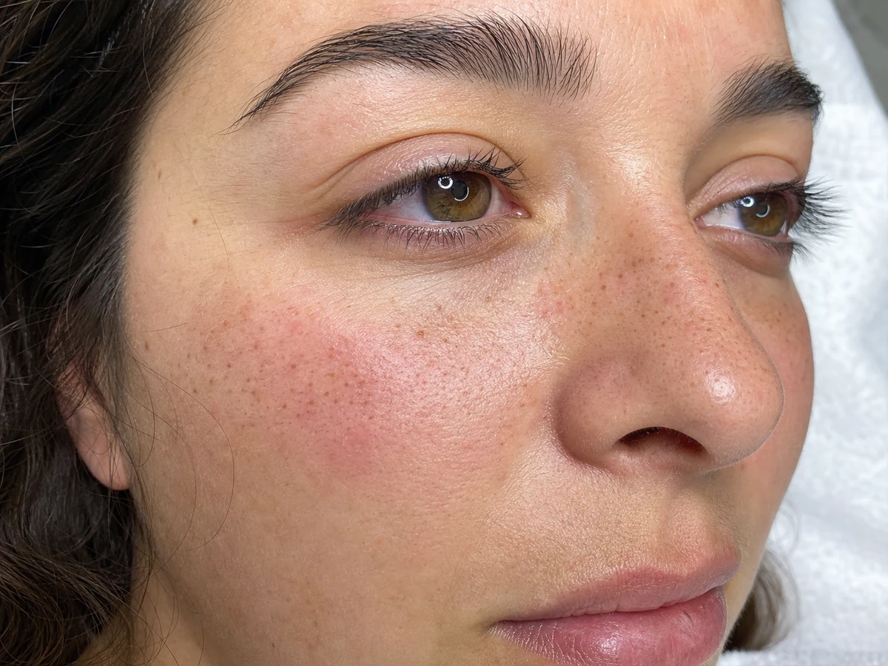

Signature Freckles · Granollers y Barcelona
Micropigmentación de pecas hiperrealistas
Creamos pecas semipermanentes con una distribución irregular y personalizada para que se integren con tu rostro. Diseñamos tono, densidad y posición según la piel y el efecto que buscas.
Reservar valoración gratuita
Un resultado diseñado contigo
¿Qué son las pecas semipermanentes?
La micropigmentación de pecas, también buscada como freckles, freckle tattoo o tatuaje de pecas, deposita pigmento de forma superficial para imitar pequeñas variaciones naturales de color. El resultado inicial se ve más intenso; durante la curación pierde fuerza y evoluciona hasta asentarse.
No trabajamos con una plantilla idéntica para todas. Antes de empezar observamos tus rasgos, tono y comportamiento de la piel. Marcamos una propuesta que puedes revisar y ajustar antes del procedimiento.
Cómo es el proceso
Antes y después
Antes de la cita evita llegar con la piel irritada o quemada por el sol. Informa de alergias, medicación, afecciones cutáneas, embarazo, lactancia o tratamientos recientes.
Después deberás mantener la zona limpia siguiendo las instrucciones, evitar rascar o arrancar pequeñas costras y limitar sol, piscina, sauna y sudor intenso durante el periodo indicado.
¿Para quién puede encajar?
- Quien busca un efecto ligero y personalizado.
- Quien quiere reforzar pecas naturales existentes.
- Quien entiende que el tono cambia al curar.
- Quien puede seguir los cuidados posteriores.
Preguntas frecuentes
¿Cuánto duran las freckles?
No existe una duración idéntica. El tono se desvanece progresivamente y depende de la piel, el sol, los cuidados y otros factores.
¿Puedo elegir cuántas pecas quiero?
Sí. Acordamos un efecto ligero, medio o más visible, adaptado a tus facciones.
¿Cómo se ven durante la curación?
Al principio se observan más oscuras y definidas. Después bajan de intensidad y el resultado se valora cuando la piel completa su proceso.
¿Es un tatuaje convencional?
No se trabaja con el mismo objetivo. En la valoración explicamos técnica, evolución y mantenimiento.
¿Atendéis a clientas de Barcelona?
Sí. El estudio está en Granollers y atendemos con cita previa a personas de Barcelona y del Vallès Oriental.